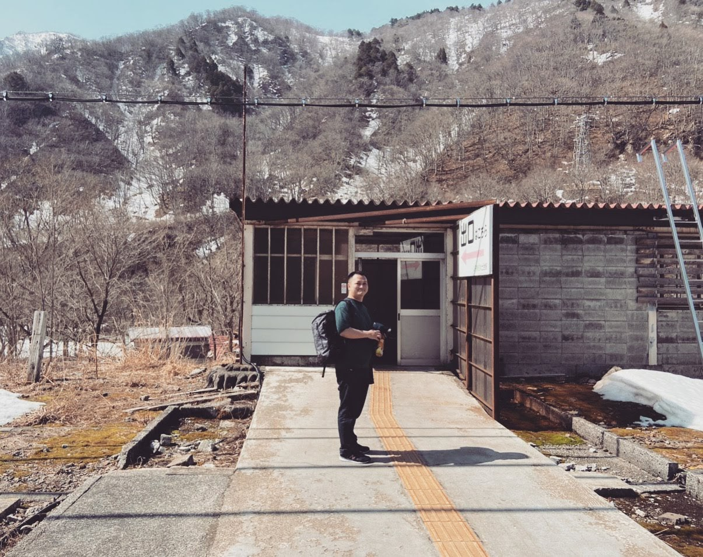

こちらのページを見ていただいて、ありがとうございます。
みんです、こちらのページはゼミ用となり、何か連絡したいことがあったら、me@ming.moe までお願いします。
いろんなところに行きたいが、コロナのせいで、家で引きこもりしかできない。
緊急事態宣言前、日本一のモグラ駅といわれる「土合駅」に行った。階段をのぼるのは大変だ。（笑）
通学してないから使わないかも
駒澤大学のWebシステムをiPhoneから簡単ログインできるツール komazawau mobileconfig
Source Code: https://github.com/fengjueming/komazawa-u.mobileconf
Macユーザー向けの駒澤大学印刷ドライバインストールツール
https://github.com/fengjueming/komau-printer-onekey